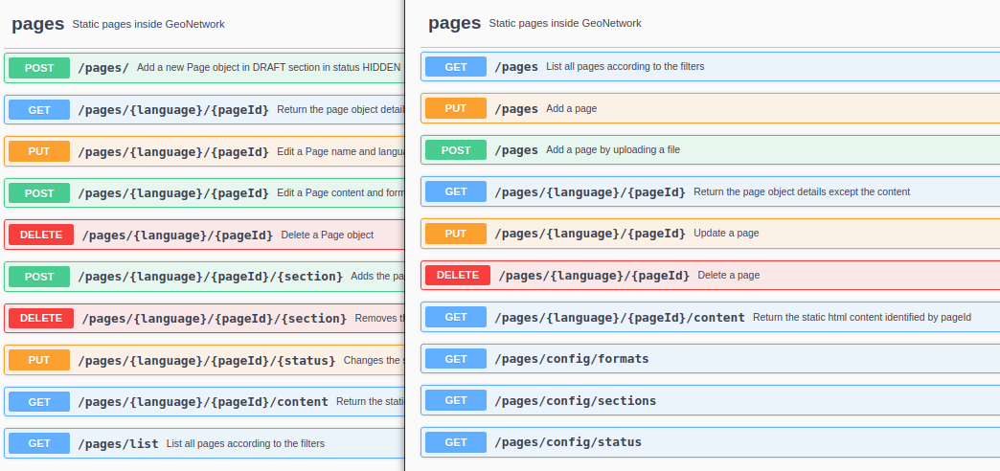
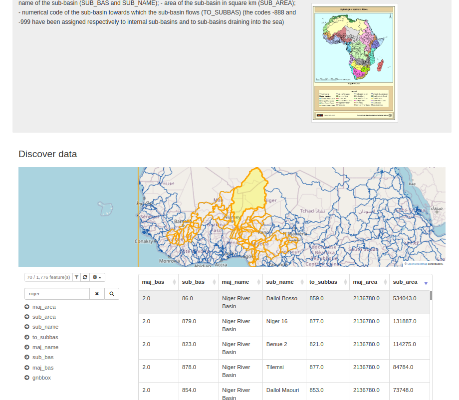

Stable
The GeoNetwork 4.2.x series is stable and recommended for production use and new installations of GeoNetwork. This series is under active use by our community, with regular improvements, documentation updates, bug reports, fixes, and releases.
Latest
Version 4.2.4
GeoNetwork 4.2.4 release is a minor release.
Migration notes
Database changes
- If using the pages API, consider checking the
spg_pagedatabase table (More information) during migration.
API changes
- API for link analysis
POST /linksis nowPOST /links/analyzeto analyze all links in a set of records.POST /links/analyzetoPOST /links/analyzeurlto analyze a URL.POST /linksallows now queries with large filter which was not supported using GET (More information).
- API on pages is now more consistent (More information). Use
GET pagesto retrieve list of pages (instead ofGET pages/list). UsePUToperation to create a new page orPOSTto upload a file for the page. Section and status can now updated when updating the page. A page label can now be defined. Format, sections and status can now be retrieved using the API.

List of changes
Major changes:
- Security / Library updates: Spring, SVN kit, GeoTools, Logging bridge
- Languages / Fix loading of ICE, KOR and CZE language code and Danish added
- Sharing / Configure profile allowed to publish/unpublish records
- Sharing / Improve definition of the Intranet group
- Portal / Check that portal exist and if not redirect to main one
- Map / WMS Time and elevation support
- CSW / Transactions: Record history of transactions and consistently apply update fixed info
- Authentication / Easier extension of OpenID mode
- Search / Improve performances for catalogs containing lot of overviews
- CMIS / Performance improvements
- Admin console / Pages manager
- Editor configuration / Add for each support
and more ... see 4.2.4 issues and pull requests for full details.
History
Version 4.2.0
GeoNetwork 4.2.0 release is a major release.
Migration instructions
Due to H2 database major update, when migrating from a previous version drop the following database caches:
- JS/CSS cache database in \$DATA_DIR/wro4j-cache.mv.db
- Formatter cache database in \$DATA_DIR/data/resources/htmlcache/formatter-cache/info-store.mv.db
If using H2 as the main database consider migrating to an external database (see configuring-database) or read H2 migration guide and migrate the database to version 2 format.
Then start the application.
If using GeoNetwork 4.2.0 with an H2 version 1 database, the following error will be reported by H2 driver:
List of changes
Major changes:
- Library updates including the move to H2 version 2 (not compatible with H2 version 1)
- Search / Multilingual support
- Search / Display results as table
- Search / Associated resources can now be part of the search response API
- Record view / Improved navigation
- Record view / Dataset citation formatter
- Toolbar / Add menu to switch portals
- Editing / Define preferred template and group to easily create new records
- Editing / Database search and replace
- Editing / Batch editing examples and copy/paste facilities
- Editing / Use directories for ISO19115-3 records managing-directories
- Editing / Easily register service in Spatineo monitor for ISO19115-3
- INSPIRE / Configure API endpoint and gateway URL
- Admin / Languages / Easily remove unneeded languages to keep admin form as simple as possible
- Admin / Harvesting / Order options according to processing to better understand the harvesting steps
- Admin / Harvesting / JSON file support
- Admin / Thesaurus / Improved form and add support for description
- Admin / Link analysis / Filter by HTTP status. Those status gives more details, a link could be valid with an authorization required status.
and more ... see 4.2.0 issues and pull requests for full details.
Version 4.2.1
GeoNetwork 4.2.1 release is a minor release.
List of changes
Major changes:
-
Accessibility improvements on map tools, top tool bar skip link
-
Record view / Preview tabular data

-
DOI improvements: Fix on published records, Configure DOI URL pattern, Disabled for metadata workflow, Multilingual exception
-
Admin / Settings / Configure profile allowed to delete published metadata
-
Library update: Switch to OpenPDF, Keycloak, Log4j2
and more ... see 4.2.1 issues and pull requests for full details.
Version 4.2.2
GeoNetwork 4.2.2 release is a minor release.
List of changes
Major changes:
- Authentication / OAuth2 OpenId Connect Single Sign-on and also support for OIDC Bearer tokens
- Search / Aggregations / Add icon decorator
- Search / Autocomplete improvements
- Indexing / Add analyzer for Dutch
- Indexing / Improve performance
- Editor / Easier configuration for custom editor
- Feature catalogue now provides a table of content when multiple tables are described.
- Feature catalogue / Use ISO19115-3 instead of ISO19110
- Admin / Improve layout for settings
- CSW / Improve DCAT support
- INSPIRE / Fix import from Re3gistry
and more ... see 4.2.2 issues and pull requests for full details.
Version 4.2.3
GeoNetwork 4.2.3 release is a minor release.
After update, don't forget to go to admin console > tools > Delete index and reindex.
List of changes
Major changes:
- Search / Multilingual support for contact, links and overview label
- Search / CSW / Improve search on multilingual content
- Search / Aggregations / Add support for filter aggregation on home page, better translations of database fields
- SEO / Add sitemap configuration and permalink configuration with DOI support.
- Record view / Series statistics improvements
- Editor / Geopublication support geopackage and zipped geopackage
- Harvester / Simple URL harvester now support XML document, multiple URLs, XSL conversion configuration
- Harvester / Simple URL harvester now support RDF DCAT
- Schema plugin / XSL conversions are dispatched in each schemas
- Resources / Improve temporary file management
- Javascript / Update to AngularJS 1.8.2
- Javascript / WRO4J cache can be built at build time
and more ... see 4.2.3 issues and pull requests for full details.
Version 4.2.4
GeoNetwork 4.2.4 release is a minor release.
Migration notes
Database changes
- If using the pages API, consider checking the
spg_pagedatabase table (More information) during migration.
API changes
- API for link analysis
POST /linksis nowPOST /links/analyzeto analyze all links in a set of records.POST /links/analyzetoPOST /links/analyzeurlto analyze a URL.POST /linksallows now queries with large filter which was not supported using GET (More information).
- API on pages is now more consistent (More information). Use
GET pagesto retrieve list of pages (instead ofGET pages/list). UsePUToperation to create a new page orPOSTto upload a file for the page. Section and status can now updated when updating the page. A page label can now be defined. Format, sections and status can now be retrieved using the API.
List of changes
Major changes:
- Security / Library updates: Spring, SVN kit, GeoTools, Logging bridge
- Languages / Fix loading of ICE, KOR and CZE language code and Danish added
- Sharing / Configure profile allowed to publish/unpublish records
- Sharing / Improve definition of the Intranet group
- Portal / Check that portal exist and if not redirect to main one
- Map / WMS Time and elevation support
- CSW / Transactions: Record history of transactions and consistently apply update fixed info
- Authentication / Easier extension of OpenID mode
- Search / Improve performances for catalogs containing lot of overviews
- CMIS / Performance improvements
- Admin console / Pages manager
- Editor configuration / Add for each support
and more ... see 4.2.4 issues and pull requests for full details.
Version 4.2.5
GeoNetwork 4.2.5 release is a minor release.
Migration notes
Database changes
- Remove Language table isdefault column (More information).
API changes
- API for link analysis
PUT /recordswhen using OVERWRITE mode only the XML of the metadata is updated. Use REMOVE_AND_REPLACE for previous mechanism which remove the existing metadata and inserting the new one. When workflow is enabled, OVERWRITE is not allowed (More information).
Index changes
After update, don't forget to go to admin console > tools > Delete index and reindex.
Thesaurus changes
If using the default regions thesaurus, update the thesaurus dates before starting the application (More information).
List of changes
Major changes:
- Full text search / Add search by individual name and email
- Map / Layer manager / Add support for multilingual layer title
- RSS / Display RSS links when OGC API Records is installed
- Workflow improvements
- CSW / DCAT / Fix for multilingual records
- ATOM feeds / Support elements using anchor
- SEO / Set HTML head title and description
- DOI / Support European Union Publication Office format
- User interface / Update Font-awesome icon library
- Admin / Harvester / Fix log file access
- Admin / Pages / Add support for submenu
- Installation / Database / Add config property to turn off database creation/migration on startup
and more ... see 4.2.5 issues and pull requests for full details.